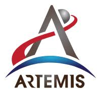

Divyesh Kracovia inDhWise
Curiosità su Interstellar
Scopri delle curiosità pazzesche su uno dei capolavori degli ultimi 20 anni,diretto da Nolan e con le colonne sonore dell'inimitabile Hans Zimmer.
April 19 - 4 min read- Reaction-Popular on Medium
Howard Wolowitz inDhSpace
Artemis:Come back To Moon
50 anni dopo,50 lunghi anni e finalmente ci apprestiamo a tornare sulla Luna,mancano circa 2 anni allo sbarco,ma siamo vicini al momento.Tecnologie,strumenti,SLS,gli astronauti e tanto altro in questa analisi sulla missione più importante di questi primi du decenni del nostro millennio.
April 3 - 10 min read- Reaction-Popular on Medium

Sheldon CooperinBazinga blog
La Linea Petrova
Tutto ruota intorno ad essa,il Sole si spegne e si indebolisce ma nessuno capisce perchè.La chiave però è lì,nella Linea Petrova.In questo articolo parleremo di uno dei film fenomeno di questo 2026:Project Hail Mary.
April 13 - 6 min read- Reaction-Popular on Medium